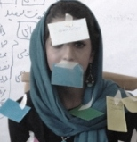
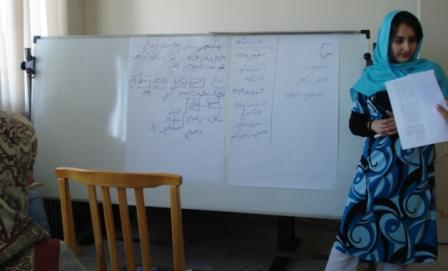
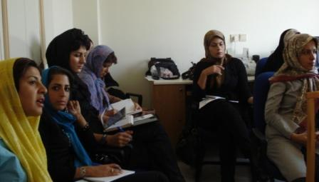

پذيرش > مقالات > خارج از چارچوب > برگزاری کارگاه خشونت برای داوطلبان کمپین


 برگزاری کارگاه خشونت برای داوطلبان کمپین برگزاری کارگاه خشونت برای داوطلبان کمپین
30 مرداد 1387 - گزارش: مریم مالک/ نیلوفر مهدیان، عکس: مارال فرخی - نسخه قابل چاپ
در پی شناسایی نیاز داوطلبان کمپین برای برگزاری کارگاه های بحث و گفتگو در مورد مسائل زنان, سومین کارگاه از سلسله کارگاه های خشونت علیه زنان و راهکارهای مقابله با آن برگزار شد. کارگاه این دوره با همکاری کانون هستیا اندیش و کمیته داوطلبین و کمیته آموزش کمپین یک میلیون امضا برگزار شد.

ابتدا حاضرین با معرفی خود با یکدیگر بیشتر آشنا شدند و سپس شیما فرزاد منش تعاریفی متفاوتی را از خشونت بیان نمود و در نهایت تعریف سازمان ملل متحد از خشونت علیه زنان را ارائه دادند : " اصطلاح خشونت علیه زنان به معنی هرعمل خشونت آمیزی است که بر اختلاف جنسی مبتنی باشد و به آسیب یا رنج بدنی، جنسی یا روانی برای زنان بیانجامد، یا احتمال منجر شدن آن به این نوع آسیب ها و رنج ها وجود داشته باشد از جمله تهدید به اینگونه اعمال، زورگویی، یا محروم سازی خودسرانه از آزادی خواه در ملا عام روی دهد و خواه در زندگی خصوصی".
خشونت علیه زنان شامل خشونتهای بدنی، جنسی و روانی می باشد که در خانواده- اجتماع- دولت روی می دهد. خشونت به انواع مختلفی تقسیم می گردد:
 خشونت فیزیکی یا بدنی شامل انواع بدرفتاری ها چون: هل دادن، صدمه زدن به اشیاء و لوازم زندگی بخصوص وسایلی که زن به آنها دلبستگی دارد، بیدار کردن های زن در نیمه شب. خشونت فیزیکی یا بدنی شامل انواع بدرفتاری ها چون: هل دادن، صدمه زدن به اشیاء و لوازم زندگی بخصوص وسایلی که زن به آنها دلبستگی دارد، بیدار کردن های زن در نیمه شب.
خشونت روانی شامل: بدرفتاری کلامی و عاطفی مثل مسخره در جمع، تحقیر، دشنام و ناسزا، تهدید و ... .
خشونت اقتصادی: یعنی ندادن خرجی یا سوء استفاده های مالی از زن، کنترل دائمی مخارج زن و پنهان کردن میزان درآمد خود.
خشونت جنسی به معنای کلیه رفتارهایی است که زن را مجبور به برقراری رابطه جنسی کند. مبحث خشونت جنسی مربوط به زنان و هم کودکان هر دو است. سوء رفتارهای جنسی یکی از پدیده هایی است که به کرات در خانواده صورت می گیرد، و تاثیر آن بر آینده قربانی ها بسیار زیاد است.
در کنار اینها نیز خشونت قانونی را باید افزود که در سایه قوانین تبعیض آمیز بر زنان اعمال می شود و زمینه اعمال خشونت های دیگر را نیز فراهم می کند.
سپس مارال فرخی با بیان اینکه خشونت معضلی جهانی است که به اشکال مختلف وجود دارد از حاضرین
خواست تا بازی ای را انجام دهند:
در "بازی مجسمه و مجسمه ساز" از افراد دو به دو خواسته شد که یکی نقش مجسمه و دیگری نقش مجسمه ساز را بر عهده بگیرند. و مجسمه ساز از مجسمه بخواهد که کارهایی را که او می گوید انجام دهد. پس از این بازی, بازیگران احساس و فکر خود را راجع به آن بیان کردند و بحث های جالبی درگرفت. به عنوان مثال سوال شد که اگر این بازی ربطی به نقش های جنسیتی زن و مرد در جامعه دارد چرا نقش زن این چنین قربانی در نظر گرفته شده است. برخی شرکت کنندگان عقیده داشتند که اگر ما خود را این چنین قربانی در مقابل جامعه ببینیم نقش کنشگری را از خود خواهیم گرفت. ما باید راه ویژه خود را با وجود نظام و نهادهای پدرسالارانه موجود به سمت برابری و آزادی کشف کنیم و نقش های دیگری برای خود متصور شویم. در مقابل, عده ای نیز معتقد بودند که قوانین و ساختار جامعه کنونی ایران, زنان را مجسمه های بی شعور و بی جان می پندارد, و زنان هرگز در سطح کلان قادر به انتخاب آزادانه نیستند. در مجموع بحث داغی درگرفت!!
باز در بازی دیگری که در آن یکی از داوطلبین نقش زنی را بازی کرد که می خواهد از همسرش که او را مورد خشونت قرار داده است جدا شود اما به دلایلی نمی تواند از حاضرین در کارگاه خواسته شد تا دلایل مختلفی را براین ناتوانی زن در طلاق بیان کنند و دلایل زیر را بیان نمودند از جمله:
"عدم حمایت و پشیبانی خانواده، مشکلات اقتصادی، نداشتن احساس امنیت در شرایط بعد از طلاق، قبول نداشتن فردیت خود به عنوان یک انسان، عدم توانایی برای شروع زندگی مستقل، فشار خانواده، علاقه به همسر، عادی دانستن خشونت، ترس از اجتماع و عدم حمایت قانون از زنانی که مورد خشونت همسران خود قرار میگیرند.
مارال فرخی ادامه داد: "اکثر زنان به دلایل متعدد چون خجالت، ترس و غیره شرایط خشونت آمیز زندگی و کتک خوردن از پدران، برادران و شوهران را بروز نمی دهند و اغلب این خشونت ها را طبیعی تصور می کنند و عده دیگری معتقدند کسی حرف آنها را باور نمی کند اگر هم باور کنند راه چاره ای ندارند به طور کلی جامعه نه تنها مرد بلکه زن را هم مسئول خشونت شوهر می دانند معمولا اطرافیان به زن تذکر می دهند که دست از کارهای خلاف شوهر بردارد. و اگر نه به نظر آنها نیز مستحق تنبیه است مثلا شوهر زن را از دیدار پدر و مادر خود منع می کند در صورت سرپیچی، مرد خشونت اعمال می کند.

سمیه رشیدی مروری کوتاه داشت بر نظریه های فمینیستی مربوط به خشونت در خانواده و اجتماع. او هدف فمینیست ها را مبارزه با ساختارها و نهادهای مردسالارانه در دولت و خانواده ذکر کرد که مروج خشونت هستند و گفت که تمام سیستم های جوامع کنونی و به خصوص جوامع سنتی مردسالارانه است و همین مبارزه فمینیست ها را به روندی بی پایان تبدیل کرده است. سمیه رشیدی سپس به ارائه راهکارهایی برای مقابله با خشونت, علل پیدایش خشونت , پدیده آزار جنسی و غیره, با مشارکت شرکت کنندگان پرداخت. نکته بارز بحث ها انطباق آنها با نمونه ها و تجربه های ملموس زن ایرانی و بعضاً خود داوطلبان بود.
" یکی از حوزه های مهم خشونت خشونت جنسی است یا همان آزارهای جنسی. این آزار از نگاه شروع میشود تا تجاوز در رفتار و کنش تهدید کننده به فرد که تمایل نداشته باشند. بدترین نوع تجاوز به نظریکی از حاضرین نگاه بود که درمورد آن بحث شد.
راهکارهای خشونت میتواند موارد متعددی باشد از جمله سکوت یا کنش؟ آموزش دادن مردان و زنان، اعتماد نفس دادن به زنان و تغییر قانون، حمایت از زنانی که قربانی خشونت قرار گرفتند.
حاضرین به بیان نظرات و دیدگاههای خود در مورد راهکارهای خشونت علیه زنان پرداختند. در بخش انتهایی کارگاه نیز داوطلبان به تجربه های شخصی از تهدید و آزار جنسی پرداختند و راهکارهایی را برای مقابله با آن به اشتراک گذاشتند.
در حاشیه کارگاه؛ کتاب ها و پین هایی که توسط کمپین یک میلیون امضا تهیه شده بود در اختیار علاقه مندان قرار گرفت.
آموزشگران: سمیه رشیدی, شیما فرزاد منش، مارال فرخی
با همکاری کمیته پیگیری داوطلبان و کمیته آموزش کمپین و کانون هستیا
ارسال به
بالاترین
،
توییتر
،
فریندفید
،
فیسبوک
در همين بخش :
 8 مارس روزی که نمی توان از ما دریغ کرد 8 مارس روزی که نمی توان از ما دریغ کرد
با طلاق توافقی از حقارت و کتک و فحش رها شدم /گزارشی از دادگاه محلاتی: مریم مالک
تجمع مادران عزادار در رشت
تغییر ممکن است/ جلوه جواهری(26 روز پس از بازداشت کاوه مظفری)
گامهایی که با تزلزل نا آشنایند/ گرامی داشت چهلم ندا در رشت
ديگر بخش ها :
طرح یک میلیون امضا
|
مقالات
|
سایت نوشته ها
|
اخبار
|
گزارش كمپين
|
گفت و گو
|
علیه سکوت
|
كوچه به كوچه
|
نامه های شما
|
گزارش ویژه
|
گفتگو با اعضا
|
ویژه سالگرد کمپین
|
تصویر برابری
|
دل آرام علی
|
تریبون
|
مقالات
|
تاریخ شفاهی
|
خارج از چارچوب
|
کتابخانه
|
درباره کمپین
|
کمپین در شهرها
|
کمپین در بند
|
صدای تغییر
|
ویژه 22 خرداد
|
لایحه حمایت از خانواده
|
گالری
|
عشا مومنی
|
امیر یعقوبعلی
|
خدیجه مقدم
|
راحله عسگری زاده و نسیم خسروی
|
پروین اردلان،جلوه جواهری، مریم حسین خواه، ناهید کشاورز
|
زینب پیغمبرزاده
|
سعیده امین، سارا ایمانیان، محبوبه حسین زاده، ناهید کشاورز و همایون نامی
|
احترام شادفر
|
نسیم سرابندی زاده،فاطمه دهدشتی
|
وبلاگ مهمان
|
پرونده خرم آباد
|
دستگیری ها
|
مریم مالک
|
پرستو اللهیاری
|
مهرنوش اعتمادی
|
سمیه رشیدی
|
Other Languages
|
همراهان
|
«فراخوان کمپین ده روز با بهاره هدایت»
| English
|